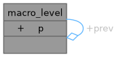

- Generated by
 1.15.0
1.15.0
|
816-tcc
TinyCC Compiler for the WDC 65816
|
Represents a level in the macro expansion stack. More...

Data Fields | |
| struct macro_level * | prev |
| int * | p |
Represents a level in the macro expansion stack.
The macro_level struct represents a level in the macro expansion stack. It keeps track of the previous level and a pointer to an integer value (p).
| int* macro_level::p |
Pointer to an integer value.
| struct macro_level* macro_level::prev |
Pointer to the previous macro level.